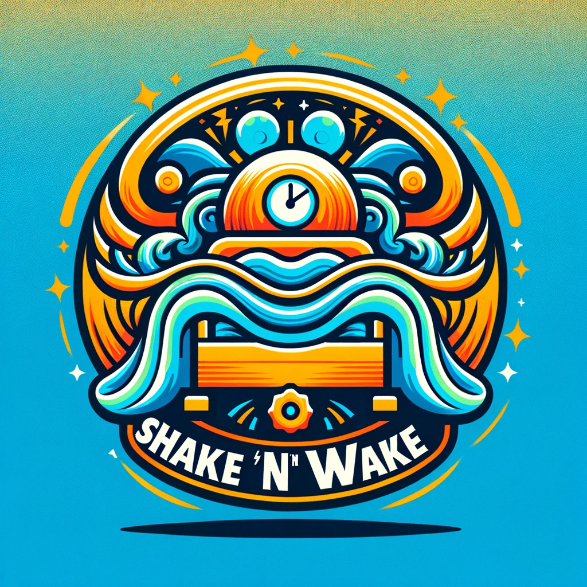

Overview
I tasked ChatGPT with creating product ideas, names, and logos for a product that aims to wake people up by shaking their bed over the traditional approach of using sound to wake someone up.
How LLMs Respond to Specific Prompts:
I first asked ChatGPT “Can I have a list of product names for an alarm clock that shakes your bed to wake you up?”. It responded with a list of product names, even linking me to some existing products with links to them.
Chat GPT’s List of Products
Here’s a list of product names for alarm clocks that are designed to shake your bed to wake you up:
- Sonic Alert Sonic Bomb Alarm Clock - A solid choice for those hard of hearing, featuring loud alarm sounds and bed shaking functionality【3:3†source】.
- Alarm Clock Pro with Bed Shaker by Bellman & Symfon - Offers ascending loud sounds, bright flashing lights, and powerful vibrations, with easily adjustable alarm and time settings【3:4†source】.
- Sonic Alert Dual Extra Loud Alarm Clock with Bed Shaker (Sonic Boom SBD375SSG) - Known for its large display and extra loud adjustable alarm, alongside the powerful bed shaker feature【3:5†source】.
- Vibio Bed Shaker by Bellman & Symfon - A wireless bed shaker that connects to your mobile via Bluetooth, allowing for custom vibration power settings and notifications from calls or messages【3:6†source】.
- iLuv SmartShaker 3 - Offers adjustable vibration strength between five distinct levels, catering to various types of sleepers, whether light or heavy【3:8†source】.
- Vibio Portable Bluetooth Bed Shaker Alarm - A travel alarm that provides tactile and visual LED alerts for incoming calls and text messages, with adjustable vibrations strength【3:10†source】.
- VibroSaver Extremely Strong Vibration Bed Shaker Smart Wi-Fi Alarm Clock - Features multiple alarm and vibration settings, immediate remote vibration, and voice control【3:16†source】.
These products are designed to assist heavy sleepers, the deaf, and the hearing-impaired in waking up more effectively through vibration and, in some cases, loud sound alarms.”
I then asked it to create a list of product names for me by asking “I want to make my own product, make me a unique list of product names for an alarm clock that shakes your bed to wake you up.”
Chat GPT”s List of Product Names
Creating a unique and catchy product name for an alarm clock that shakes your bed to wake you up can set the tone for its brand identity. Here’s a list of innovative and memorable names for your product:
- QuakeWake Alarm
- RumbleRiser Clock
- VibroMorn Alert
- ShakeUp Call
- TremorTime Alarm
- WakeQuiver Clock
- MornShake Alert
- VibrAlarm Wake
- ShakeRouse Clock
- BedShocker Alert
- BuzzShake Morning
- RiseVibe Alarm
- ShakeBolt Wakeup
- VibrateAwake Clock
- PulseWake System
These names aim to encapsulate the essence of the product—its ability to shake and wake users from their sleep in a unique way. Each name combines elements of vibration, waking, and morning, suggesting the product’s primary function and appeal.
Inspired by the list of names, I decided to go with the name “Shake ’N Wake.” After coming up with a name, I asked ChatGPT to make me a logo with the company name “Shake ’N Wake.”
Chat GPT’s Logo + Response

Here’s the logo for “Shake ’N Wake”. It’s designed to reflect the energy, wakefulness, and innovative aspect of your alarm clocks that shake the bed to wake up users. The colors and elements chosen aim to evoke the sense of morning energy and the unique functionality of your product.
I then asked ChatGPT to make it more modern and simplistic.
Chat GPT’s Second Logo
Can they mirror certain human communicative behaviors?
Overall, I was pleased with how ChatGPT responded to my prompts. I was really suprised at first when it replied to me with a list of real, pre-existing products rather than giving me a list of fake product names. With that regard, I felt like it misunderstood what I was prompting it to do, however, after re-prompting it I was able to get a response I liked better. I’m curious why the seconed logo has 4 different variations from one output rather than one logo, like the original output.